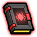
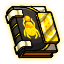
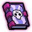
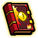

Grimorios & Arcane Tomes Collection

Apprentice Tome
Type: Magic Book
Power: 18 Attack
Ability: Contains basic introductory spells to channel novice arcane energy.

Spider Venom Grimoire
Type: Dark / Poison
Power: 46 Attack
Ability: Radiates a sinister red glow, summoning toxic spiders and venomous web projectiles.

Tome of Zephyr Winds
Type: Wind / Air
Power: 44 Attack
Ability: Bound in turquoise leather, unleashing swift gale-force winds and atmospheric shockwaves.

Scarab Codex of Anubis
Type: Ancient / Holy
Power: 52 Attack
Ability: Inscribed with golden scarabs, invoking desert curses and ancient protective magic.

Grimoire of Abyssal Shadows
Type: Dark Magic
Power: 55 Attack
Ability: Pulsates with purple energy and a grinning skull seal, firing piercing dark bolts.
Verdant Codex of Roots
Type: Earth / Nature
Power: 42 Attack
Ability: Secured with sturdy wooden straps, casting thorny vines and earthy projectiles.

Infernal Tome of Flames
Type: Fire Magic
Power: 50 Attack
Ability: Features a glowing fiery eye emblem that launches explosive fireballs and burning embers.

Codex of Radiant Sunbeams
Type: Holy / Light
Power: 48 Attack
Ability: Radiates brilliant golden sunlight, highly effective at banishing dark creatures and undead.

Cursed Tome of the Undead
Type: Necromancy
Power: 58 Attack
Ability: A living screaming face tome that drains enemy life force and raises dark spirits.
Glacial Tome of Tides
Type: Water / Ice
Power: 47 Attack
Ability: Braced with frost-blue vials, firing pressurized water jets and freezing icicles.